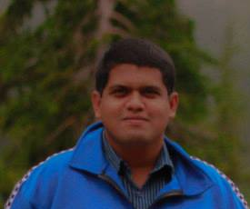

Rifat Shahriyar

Assistant Professor
Department of Computer Science and Engineering
Bangladesh University of Engineering and Technology
Room 309, ECE Building, West Polashi
Dhaka-1000, Bangladesh
Email : rifat at cse.buet.ac.bd, rifat1816 at gmail.com
About Me
I am working as an Assistant Professor at Department of Computer Science & Engineering (CSE) of Bangladesh University of Engineering & Technology (BUET). I have completed Doctor of Philosophy (Ph.D.) in April 2015 from Research School of Computer Science in Australian National University (ANU). I was a member of Computer Systems Group and my supervisors were Steve Blackburn and Kathryn McKinley. I have completed Bachelor of Science (B.Sc.) in May 2007 and Masters of Science (M.Sc.) in December 2009 from CSE, BUET.
Research Interests
My research interests are memory management specially garbage collection, virtual machine design & implementation, and programming language.
Selected Publications
[1] R. Shahriyar, S. M. Blackburn, and K. S. McKinley, "Fast Conservative Garbage Collection," to appear in Proceedings of the 25th ACM SIGPLAN conference on Object Oriented Programming Systems, Languages and Applications, OOPSLA '14, Portland, USA, 2014. Download ACM Download Talk Code[2] R. Shahriyar, S. M. Blackburn, X. Yang, and K. S. McKinley, "Taking Off the Gloves with Reference Counting Immix," in Proceedings of the 24th ACM SIGPLAN conference on Object Oriented Programming Systems, Languages and Applications, OOPSLA '13, Indianapolis, USA, 2013. Download ACM Download Talk Poster Code
[3] R. Shahriyar, S. M. Blackburn, and D. Frampton, "Down for the Count? Getting Reference Counting Back in the Ring," in Proceedings of the Eleventh ACM SIGPLAN International Symposium on Memory Management, ISMM '12, Beijing, China, June 15-16, 2012. Download ACM Download Talk Poster